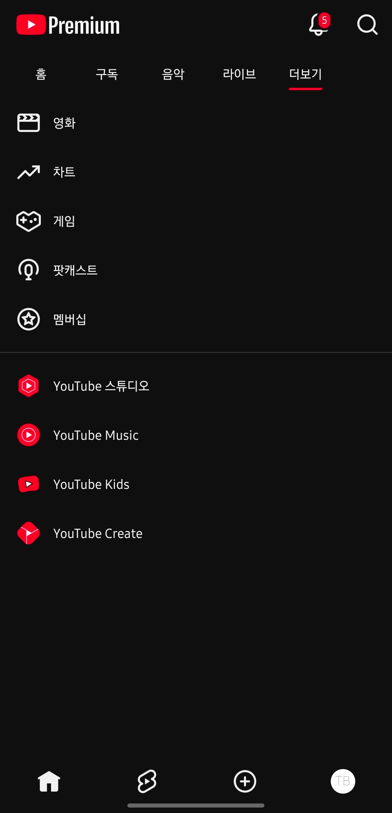

씨발 UI또 쳐바꿈

씨발 UI또 쳐바꿈
아래로 스와이프하면 새로고침되는 기능 구독탭에서 안되는거 개열받음 시발
난 화면 꾹누르고 밀면 내가 원하는 시간대에 이동하는거 없앴을때 개 빡쳤었는데
항상 편한거 없애버리고 ㅈㄴ 불편한 ㅄ같은 기능만 존나 쳐넣음
불편하다가 좀 익숙해지려고 하면 바꾸고 쓰고 있으면 또 바꾸고
리밴스드 ㄱ
리벤스드 귀찮았는데 한번 해야하나
한번 알아보는것도 좋아 강요는 아님
혼자쓰는 거면 리벤스드가 압도적으로 좋은데 가족땜에 일본으로 이주함
딱 30분만 투자하면 몇달이 편하다
맨 아래 구독탭 사라진거 어이없음 내가 구독한거만 보려면 한단계를 더거쳐야됨
가족계정 안되는게 진짜 존나 빡침
1080고정
눈을 떴구나 모르페로 오거라
모르페는 또 뭐지 리밴스드보다 좋아?
업데이트 좆같이 많아
무료로 해주면 고마운거지 뭐
숏츠 구간이동이라고 하나 지점 옮기는거 그거 어려워져서 빢침
이거 하이프 순위는 어디로 간거냐 찾을 수가 없음;;;
음악탭 분리시켜서 음악 알고리즘은 저기서만 나오면 찬성이긴해 어쩌다 하나 틀면 주구장창 그것만 추천하는거 짜증
ㄹㅇ 계속 쳐바꾸는데 계속너 병신같이 변함
저 좆 같 은 + 버 튼 빼 는 옵 션 만 들 라 고 시 발 똥 싸 다 가 왜 내 셀 카 를 봐 야 하 는 데

제일많이쓰는 구독채널버튼이 왜 왼쪽위로가냐고 싯팔
오른쪽 엄지 위치에있어야지
ui에 정보가 너무 많아짐
피드 ㅈ 같아서 걍 몇개 보다가 끔
구독메뉴 밑에 있어서 엄지로 클릭하기 좋았는데 상단으로 가서 좃같음
그리고 호환문제 생겼는지 PC에서 재생목록 플레이리스트 안 뜸
얘네 일부러 구독채널 보면 알고리즘에 갇히니깐 못보게 하고 뭔가를 유도하려고 UI 저렇게 만든듯 구독 보려면 너무 불편해
아이폰만 그런진 모르겠는데 하단바 갑자기 색 변하면서 하단바 안먹음 ㅅㅂ... 앱 종료 후 다시 키거나 홈으로 나갔다가 들어오면 가끔 풀림
진짜 개 찢어죽이고싶음 개좆병신새끼들 ㄹㅇ
난 많은거 안바란다 폴드에서 댓글 볼때 영상 아랫 부분이 안짤렸으면 좋겠어
재생목록 순서 바꿀 때 왼쪽에 줄 3개 좀 크게 만들라고 구글 씹새끼들아 난 손가락이 굵어서 터치가 안돼ㅜㅜ
모바일 ui? 좆같이 불편해짐
유튜브 켜면 숏츠 지동으로 켜지는게 개좆같음
구글특임 ui계속바꿈
크롬도 유튜브도 그만좀 처바꿔다오..
구독 같자기 사라져서 ㅅㅂ 뭔가했음
숏츠 댓글이랑 저장 붙어있는거 ㅈ같음
유튜브 어플 아이폰 ui도 바꿔서 하단 좌우에 빈공간 생겨서 버튼 누르다가 영상 클릭됨 ㅋㅋㅋㅋㅋㅋ
존나 불편해 ㅅㅂ
채널완전차단버튼좀 만들어달라고
자꾸 이러면 어쩔 수 없어 나도 더이상은 못참앗
ㄹㅇ 보기 불편해짐